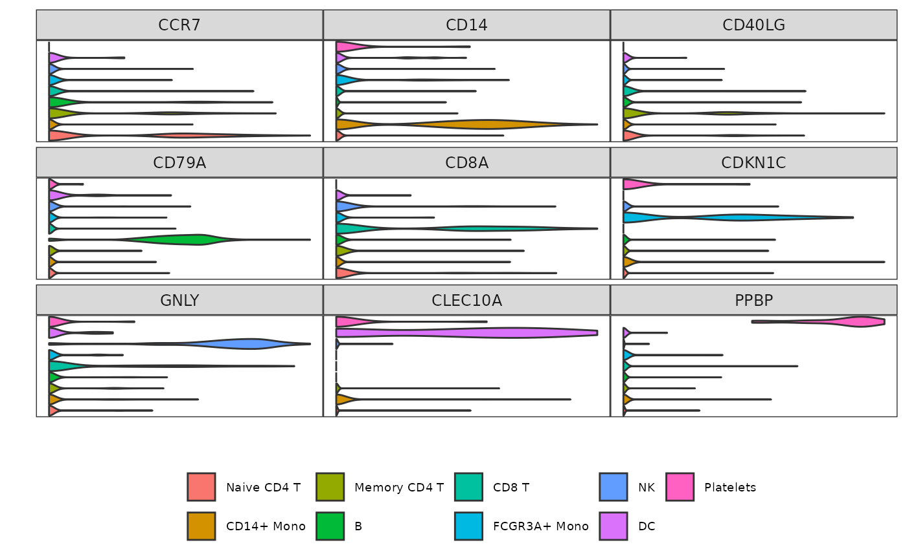

Square stacked violin plot of gene expression in each identity
Source:R/Grid_VlnPlot.R
Grid_VlnPlot.RdThis function is a stacked violin plot optimized to display the average expression of features in a Seurat object in a grid fashion (square) instead of a single column like other stacked violin functions available in other packages.
Usage
Grid_VlnPlot(
seurat_object,
assay = "RNA",
layer = "data",
features,
idents = NULL,
scale = TRUE,
rotate.axis = FALSE,
colors = NULL,
order.idents = NULL,
order.colors = TRUE,
idents.text.size = 9,
show.idents = FALSE,
features.text.size = 9,
legend.text.size = 7,
legend.side = "bottom",
show.legend = TRUE,
ncol = "square"
)Arguments
- seurat_object
A Seurat object.
- assay
Character. The name of an assay containing the
layerwith the expression matrix. If theseurat_objectcontains multiple 'RNA' assays, you may specify which one to use (for example, 'RNA2' if you have created a second 'RNA' assay you named 'RNA2'. See Seurat v5 vignettes for more information). You may also use another assay, such as 'SCT', to pull feature expression from.- layer
Character. The name of a layer (formerly known as slot) which stores the expression matrix. It is recommended to use 'data'.
- features
Character. The names of one or several features to plot the cell expression from.
- idents
Character. The names of one or several identities in the active.ident metadata to select. If
NULL, all identities are used.- scale
Logical. If
TRUE, scales the violins to have the same max height between features.- rotate.axis
Logical. If
TRUE, flips the axis, displaying violins vertically instead of horizontally.- colors
Character. The color names for each identity of the active.ident metadata or in
idents. IfNULL, uses Seurat's default colors.- order.idents
Character or Numeric. Either 'reverse', or the identities (as names or as numeric values corresponding to the indices) of the active.ident metadata or in
identsto order the cells.- order.colors
Logical. If
TRUE, thecolorswill automatically be ordered according toorder.prop. Ignored iforder.prop=NULL.- idents.text.size
Numeric. The font size of the identity names. Ignored if
show.idents=FALSE.- show.idents
Logical. If
TRUE, shows the identity names on the plot.- features.text.size
Numeric. The font size of the feature names.
- legend.text.size
Numeric. The font size of the legend text. Ignored if
show.legend=FALSE.- legend.side
Character. The side where the legend will be displayed, either 'left', 'right', 'top' or 'bottom'. Ignored if
show.legend=FALSE.- show.legend
Logical. If
TRUE, shows the legend.- ncol
Numeric. The number of columns to use. If 'square', will display features in a square grid or as close as possible depending on the number of features.
Examples
# Prepare data
pbmc3k <- Right_Data("pbmc3k")
pbmc3k.markers <- c("CCR7", "CD14", "CD40LG",
"CD79A", "CD8A", "CDKN1C",
"GNLY", "CLEC10A", "PPBP")
# Example 1: default parameters
Grid_VlnPlot(pbmc3k,
features = pbmc3k.markers)
